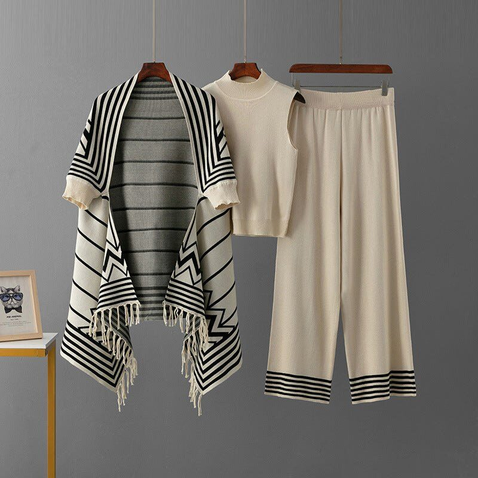
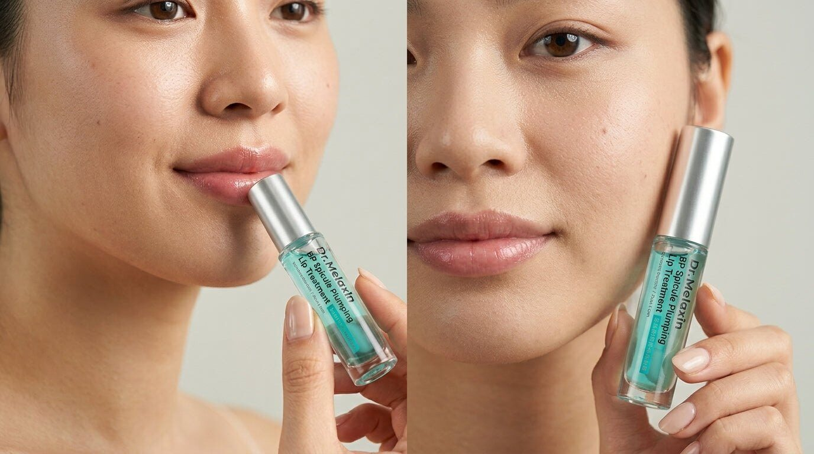
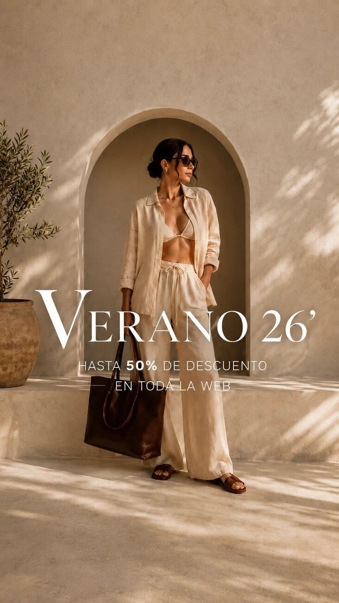
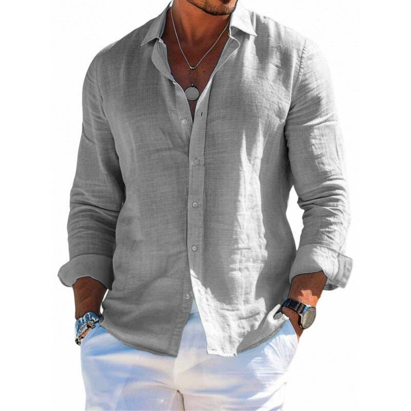

LAURAVOGUEFASHION / 01
Quietly
confident.
01 / 06confident.
INDEPENDENT COMMERCE DESIGN STUDIO EST. FOR THE NEXT ERA
Textify creates expressive ecommerce experiences for brands that want to be impossible to scroll past.
01 / SELECTED WORK
Six live stores. Six different worlds. Explore the work, then see each experience in the wild.




A BETTER KIND OF ONLINE STORE
Because shopping is a feeling before it’s a transaction.
02 / WHAT I DO
From first impression to final checkout, every detail should make the brand clearer and the buying journey easier.
Distinctive online experiences that bring your products and point of view together.
Visual directionResponsive layoutsProduct pagesClear paths from discovery to purchase, designed for real shoppers and real devices.
NavigationCart & checkout flowsUsabilityType, color, content, and components that give your store one unmistakable voice.
Art directionDesign systemsCampaign pages03 / THE APPROACH
A focused process that keeps the creative work connected to what your customers need.
Understand the brand, the product, and the people buying it.
Shape a visual direction and shopping journey with purpose.
Turn the approved experience into a responsive, usable site.
Test, improve, and prepare every detail for launch.
04 / THE STUDIO
Textify is an independent design practice with a simple belief: great ecommerce should make a brand feel human and shopping feel effortless.
Every project starts with the story behind the products. From there, I bring together visual design, thoughtful interaction, and a clear path to purchase.
GOOD TO KNOW
Yes. We can start with a focused audit, then refine the structure, visual identity, and key shopping flows.
Absolutely. Textify can help shape a brand’s first online store, from the visual direction through launch-ready design.
The right platform depends on your catalog, content, and operations. We’ll choose the setup that fits your business during discovery.
Send a short note about your brand, what you sell, and what you want to improve. I’ll take it from there.
05 / LET'S MAKE SOMETHING GOOD
Tell me what you’re building. Let’s make the experience as remarkable as what you sell.
testimonyakinbinu490@gmail.com ↗